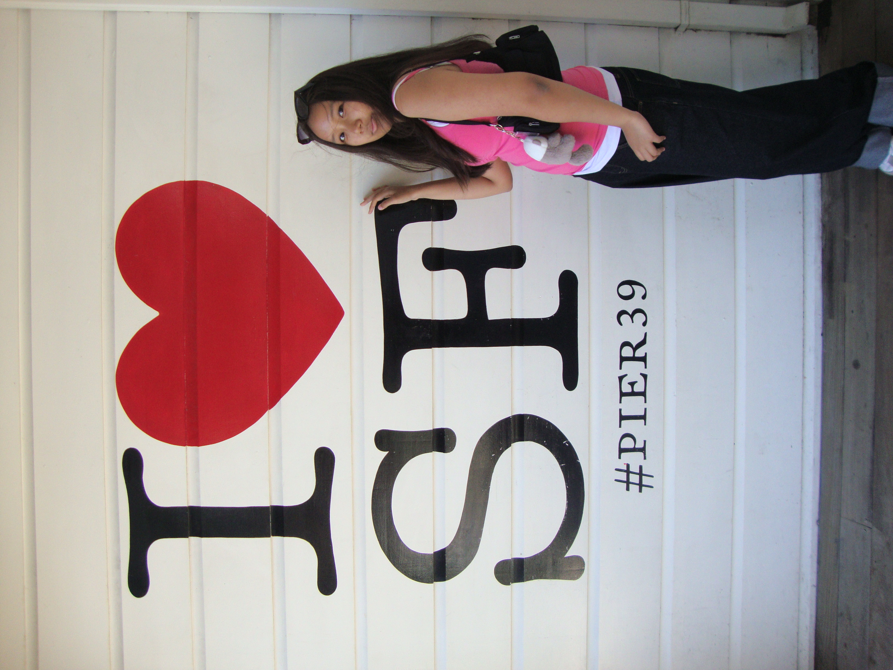

🎶
music
i loveee jane remover, wisp, and deftones! i also love listening to lucy bedroque, julie, and mymp!
｡•┈୨♡୧┈•｡
a mini introduction page i made ♡

hi hi! i'm sophel ✧
tibetan american, i love coding(sometimes)
a little collection of things that make me, me!
i loveee jane remover, wisp, and deftones! i also love listening to lucy bedroque, julie, and mymp!
i love watching (horror) game playthroughs from youtubers like coryxkenshin and antonychenn! i also like dance ^^
i looooovvvveeeee resident evil, silent hill, soul eater omniscient reader's viewpoint, wuthering waves, got dropped in a ghost story still gotta work, milky subway, anime, and webtoons. currently trying to cosplay maka albarn!
currently obsessed with meow man on webtoon and this shoujo manga glasses with a chance of delinquent!!
small thoughts and updates
press play for a little soundtrack ♡
Bubble effect inspired by mf2fm's Bubble Cursor Trail · Retro player inspired by june/loveberry, adilene, & 98.css